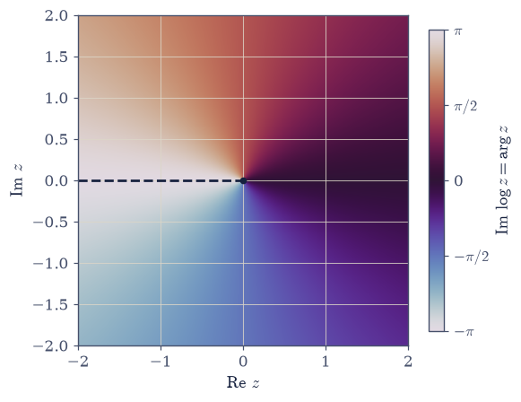
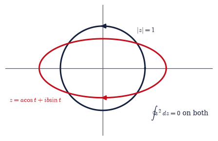
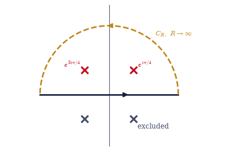
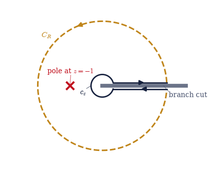

7.1 Complex Analysis I: Analytic Functions and the Residue Theorem#
Notebook overview#
Volume VII begins the way Volumes 0, V, and VI did: with its mathematics, built once and properly, before any physics is allowed to depend on it. The mathematics this volume runs on is the analysis of functions of a complex variable. The claim deserves justification, because at first sight quantum statistical mechanics is about counting states and weighting them by \(e^{-\beta E}\) — where is the complex plane in that? Everywhere, it turns out. The Bose and Fermi integrals that carry the photon gas, the degenerate electron gas, and Bose–Einstein condensation are integrals wrapped around branch cuts; the frequency sums of thermal physics (the Matsubara sums of §7.2) are evaluated by trading a sum for the poles of a function that has one at every term; the Stirling approximation that Volume V leaned on is the shallowest case of an asymptotic method (steepest descent) that lives entirely in the complex plane; and the response functions of matter obey exact relations — the Kramers–Kronig relations of §7.2 — that are theorems about analyticity, with causality as the only physical input. A subject whose integrals, sums, asymptotics, and response theory all route through the complex plane deserves to have that plane built carefully.
So this notebook builds the core machinery: what it means for a complex function to be differentiable (the Cauchy–Riemann equations, and the rigidity they impose), the multivaluedness of the logarithm and the branch cuts that tame it, contour integration and Cauchy’s theorem, the integral formula that lets a boundary dictate an interior, Laurent series and the classification of singularities, and the residue theorem — the machine that converts closed-contour integrals into arithmetic. The chapter’s climax spends that machinery on the four classic families of real integrals, each chosen with intent: the Fourier-type family is the Lorentzian-lineshape and exponential-decay pair behind §6.24, and the closing keyhole integral is one Boltzmann factor away from the Bose and Fermi integrals of §7.3.
A word on curriculum, recorded deliberately. This course ordinarily teaches a complete minimal toolkit — each technique introduced exactly when needed, to exactly the depth needed. The three-notebook arsenal that opens this volume is a deliberate exception: complex analysis is developed in full, Cauchy–Riemann equations and all, because the subject is too central — to physics and to the education of anyone who computes for a living — to be issued on a need-to-know basis. It is a detour that is not one.
Conventions (fixed for the whole volume). We use the principal branch of the logarithm and the argument, \(\arg z \in (-\pi, \pi]\), which is exactly the convention of
numpy.logandnumpy.angle; its branch cut lies along the negative real axis. Closed contours are traversed counterclockwise (positive orientation) unless stated otherwise. Contour integrals are computed numerically by parametrization, \(\oint f\,dz = \int f(z(t))\,z'(t)\,dt\), withnumpy.trapezoidon \(N \gtrsim 10^4\) points — and for a closed contour this humble rule is secretly spectral: on a smooth periodic integrand its error falls geometrically with \(N\), which is why the checks below routinely reach \(10^{-15}\).How to read the checks. Each exercise closes with a
validatecall against an independent fact: Cauchy–Riemann residuals at rounding level for \(z^2\) and \(e^z\) against an exactly-2 violation for \(\bar z\); the \(2\pi i\) jump of the logarithm across its cut; \(\oint z^2\,dz\) vanishing to machine precision while \(\oint \bar z\,dz\) measures the enclosed area exactly; the integral formula reconstructing \(e^a\) from boundary values; residues extracted by small-circle contours agreeing with the limit formulas; and all four real-integral families matchingscipy.integrate.quad— except where quadrature itself strains, which is part of the lesson. A ✓ is strong evidence; a ✗ is a prompt to locate the discrepancy.Scope. One complex variable, computationally, from analyticity to the residue theorem and its classic applications. The physicist’s payload — principal values and Sokhotski–Plemelj, the Kramers–Kronig relations, Matsubara sums, steepest descent — is §7.2; the statistical toolkit (Gamma and zeta functions, polylogarithms, the Bose and Fermi integrals, the Sommerfeld expansion) is §7.3. Conformal mapping is named as a horizon, not developed. See Arfken, Weber & Harris, Mathematical Methods for Physicists; Ablowitz & Fokas, Complex Variables; and — for the geometrically curious — Needham, Visual Complex Analysis. Cross-reference §6.1 (the algebra of \(\mathbb{C}\)), Volume III (two-dimensional electrostatics and harmonic potentials), §5.3 (Stirling, re-derived by steepest descent in §7.2), and §6.24 (the Lorentzian lineshape).
Theory in brief#
Analyticity and the Cauchy–Riemann equations#
Write \(f(z) = u(x,y) + i\,v(x,y)\) for \(z = x + iy\). The function is analytic (holomorphic) at \(z\) if the complex derivative
exists — with the same value for every direction of approach. That innocuous clause is the whole subject. Approach horizontally (\(\Delta z = h\), real) and the limit is \(\partial f/\partial x = u_x + i v_x\). Approach vertically (\(\Delta z = ih\)) and it is \(\tfrac{1}{i}\,\partial f/\partial y = v_y - i u_y\). Demanding these agree, real and imaginary parts separately, gives the Cauchy–Riemann equations,
Two real constraints on four partial derivatives: complex differentiability is not a notation but a condition, and most smooth functions of \((x, y)\) fail it. It is also sharply checkable: \(z^2\) and \(e^z\) satisfy Eq. 668 (numerically, residuals near \(10^{-10}\)), while \(\bar z\) and \(|z|^2\) violate it at order one — for \(\bar z\) the violation is exactly \(2\). The analytic functions are the aristocracy of functions, and admission is strict.
Harmonic consequences#
Differentiate Eq. 668 once more and cross the equations: \(u_{xx} = v_{yx} = v_{xy} = -u_{yy}\). The real part of an analytic function — and, by the same argument, the imaginary part — satisfies Laplace’s equation,
Every analytic function therefore packages two solutions of the two-dimensional Laplace equation — the equation of the charge-free electrostatics of Volume III — and the Cauchy–Riemann equations make their level curves mutually orthogonal: equipotentials and field lines, delivered as a pair. This is the doorway to conformal mapping, the classical art of solving two-dimensional electrostatics and ideal flow by bending the plane analytically; we name the horizon and move on.
Elementary functions and branch cuts#
The exponential \(e^z = e^x(\cos y + i \sin y)\) is entire — analytic everywhere. Its inverse cannot be: since \(e^{z + 2\pi i} = e^z\), the logarithm is multivalued,
and choosing the principal branch introduces a branch cut along the negative real axis, across which \(\log z\) jumps by \(2\pi i\). Fractional powers inherit the cut through \(z^{\alpha} = e^{\alpha \log z}\): follow \(\sqrt z\) continuously once around the origin and it returns to minus its starting value — the function lives on two sheets, and the cut is where we have chosen to staple them. Branch cuts are not pathology but bookkeeping, and the bookkeeping becomes load-bearing twice below: in the keyhole integral of Exercise 8, where the cut is the mechanism that makes the method work, and in the polylogarithms of §7.3, which carry their physics on their cuts.
Contour integrals and Cauchy’s theorem#
The integral of \(f\) along a path is defined by parametrization,
\(\int_C f\,dz = \int_{t_0}^{t_1} f(z(t))\,z'(t)\,dt\), and this is exactly how we compute it
throughout (numpy.trapezoid on a discretized contour). The first pillar of the subject is
Cauchy’s theorem: for \(f\) analytic on and inside a closed contour \(C\),
(Verified below to \(\sim 10^{-16}\).) The classical proof runs through Green’s theorem and the Cauchy–Riemann equations Eq. 668; Ablowitz & Fokas, Complex Variables, Ch. 2, carries it out in full. The practical reading is that contours may be deformed freely through analytic territory without changing the integral — the single most-used move in the subject, and the one that powers everything after. The converse spectacle is just as instructive: for the non-analytic \(\bar z\), the closed integral does not merely fail to vanish, it measures geometry, \(\oint \bar z\,dz = 2i \times (\text{enclosed area})\), exactly.
The Cauchy integral formula#
For \(f\) analytic on and inside \(C\) and \(a\) any interior point,
The derivation is one contour deformation: shrink \(C\) to a small circle about \(a\), where \(f(z) \approx f(a)\) and the integral of \((z-a)^{-1}\) supplies the \(2\pi i\); Arfken, Weber & Harris, Ch. 11, writes it out line by line. This is the rigidity thesis made literal: the values of \(f\) on the boundary determine its value at every interior point — knowing an analytic function on a curve is knowing it inside. Differentiating under the integral gives \(f^{(n)}(a)\) for every \(n\): an analytic function is automatically infinitely differentiable, and its Taylor series converges to it. (Compare real analysis, where differentiability once buys nothing further; here it buys everything, unasked.)
Laurent series, poles, and residues#
Around an isolated singularity at \(a\), an analytic function expands in a Laurent series, a Taylor series extended to negative powers (the expansion follows from the integral formula applied to an annulus; Arfken, Weber & Harris, Ch. 11, derives it in full),
If the negative powers terminate at \(n = -m\) the singularity is a pole of order \(m\); if they do not terminate it is an essential singularity (\(e^{1/z}\) is the standard specimen). The orthogonality relation in the middle of Eq. 673 — direct parametrization shows every power of \((z-a)\) integrates to zero around a circle except \(n = -1\) — is why the coefficient \(c_{-1}\), the residue, is the sole survivor of closed-contour integration, and hence the only number the theorem below needs. Extracting residues is a craft with three tools: the limit formula \(c_{-1} = \lim_{z\to a}(z-a)f(z)\) for simple poles, a derivative formula for higher order, and — always available, whatever the order — the numerical small-circle contour, which reads \(c_{-1}\) off directly.
The residue theorem#
Combine Cauchy’s theorem (deform the contour into small circles around each enclosed singularity) with the survival of \(c_{-1}\) (evaluate each small circle), and the pillars merge into the machine:
Three moves, endlessly repeated: close a contour, locate the poles, read off the residues. Integrals that resist every elementary technique fall in two lines.
The four classic families of real integrals#
The machine’s classic applications, each verified against quadrature below:
For (i), the closing semicircle contributes nothing because the integrand decays faster than
\(1/|z|\); for (iii), Jordan’s lemma closes \(e^{ikz}\) in the half-plane where it decays
(\(\operatorname{Im} z > 0\) for \(k > 0\)), and the result is the Lorentzian–exponential pair
behind every linewidth and lifetime in §6.24
— a pole’s imaginary part is a decay rate. Family
(iii) is also where the contour method beats the computer outright: scipy.integrate.quad warns
and drifts on the oscillatory integrand while the residue answer is exact. And family (iv), the
keyhole, is a deliberate pre-echo: replace \(1 + x\) by \(e^x - 1\) or \(e^x + 1\) and these are the
Bose and Fermi integrals of §7.3 — same anatomy, same cut, same three
moves.
Setup#
Conventions and one instrument: the plotting palette, the branch/orientation/quadrature
conventions fixed for the whole volume, and the circle parametrization circle(c, R), which
hands back a path and its Jacobian for whatever is going to integrate along it. The machinery
this notebook is about — the parametrized contour integral, the Cauchy–Riemann test, the
small-circle residue extraction, and the residue theorem’s right-hand side — you build in the
exercise where it is earned.
The Setup below holds this notebook’s data and instruments — nothing you are asked to build. It is collapsed so the building stays yours; expand it whenever you want the details.
Exercise 1 — Analyticity is a sharp property#
Complex differentiability is not a formality: it either holds, with far-reaching consequences, or it fails completely, and a one-line numerical test tells us which. We make the test and run it. Cite Eq. 668, Eq. 669.
Derive the Cauchy–Riemann equations by equating the horizontal and vertical limits of the difference quotient defining \(f'(z)\).
Write
cauchy_riemann_residual(f, z0, h=1e-5): form \(\partial f/\partial x\) and \(\partial f/\partial y\) by central differences of step \(h\), read the four partials off their real and imaginary parts, and return \(\max(|u_x - v_y|,\ |u_y + v_x|)\). Write this one yourself — the implementation is the lesson.Evaluate that violation for \(z^2\), \(e^z\), \(\bar z\), and \(|z|^2\) at several points of the plane.
Confirm that the analytic pair sits at rounding level (\(\sim 10^{-9}\) or below) while \(\bar z\) and \(|z|^2\) violate at order one — and show why the \(\bar z\) violation is exactly \(2\).
Verify with a five-point Laplacian (central differences via plain
numpyarithmetic) that \(\operatorname{Re} z^2 = x^2 - y^2\) is harmonic, and state the consequence: the real and imaginary parts of analytic functions are two-dimensional electrostatic potentials.
Cauchy–Riemann residual max(|u_x − v_y|, |u_y + v_x|) (h = 1e-5):
z^2 at [(0.7+0.3j), (-1.2+0.8j), (2-1j)]: 5.55e-12 2.22e-11 2.22e-11
e^z at [(0.7+0.3j), (-1.2+0.8j), (2-1j)]: 6.11e-11 9.71e-12 2.44e-10
conj(z) at [(0.7+0.3j), (-1.2+0.8j), (2-1j)]: 2.00e+00 2.00e+00 2.00e+00
|z|^2 at [(0.7+0.3j), (-1.2+0.8j), (2-1j)]: 1.40e+00 2.40e+00 4.00e+00
analytic pair, worst residual: 2.44e-10 (rounding floor)
conj(z) violation: 1.9999999999964486 (= 1 − (−1), exact)
|z|^2 violation at z = (0.7+0.3j): 1.40 (= max(|2x|, |2y|))
five-point Laplacian of Re z^2 at (0.7, 0.3): 2.22e-10 (harmonic)
Validation 1#
✓ the analytic pair z^2, e^z satisfies the Cauchy–Riemann equations to rounding level [worst residual 2.4e-10]
✓ the Cauchy–Riemann violation of conj(z) is exactly 2 (u_x − v_y = 1 − (−1)) [got 2 vs expected 2 (rtol=1e-12, atol=1e-09)]
✓ |z|^2 violates Cauchy–Riemann at O(1), while Re z^2 is harmonic (∇²u ≈ 0) [violation 1.40, Laplacian 2.2e-10]
True
Exercise 2 — The branch cut of the logarithm#
The logarithm’s multivaluedness is bookkeeping we must own before fractional powers, the keyhole contour of Exercise 8, and the polylogarithms of §7.3. We make the cut visible and watch a function change sheets. Cite Eq. 670.
Evaluate
numpy.logjust above and just below the negative real axis (offsets \(\pm 10^{-9}i\) at \(z = -1\) — never on the axis, where the convention alone decides) and exhibit the \(2\pi i\) jump across the cut.Plot \(\operatorname{Im}\log z = \arg z\) over the plane with
numpy.angleon a grid, using a cyclic colormap so the only visible seam is the genuine cut on the negative real axis.Show that \(\sqrt z = e^{\frac{1}{2}\log z}\) inherits the cut: track \(\sqrt z\) continuously along the unit circle (unwrap the phase with
numpy.unwrap+numpy.angle) and watch it return to minus its starting value after one full loop.State the convention adopted for the rest of the volume (principal branch, cut on the negative real axis) and why a choice must be made at all.
log(−1 + 1e-9 i) = 0.000000000+3.141592653j
log(−1 − 1e-9 i) = 0.000000000-3.141592653j
jump across the cut = 0.000000000+6.283185305j (2πi = 0.000000000+6.283185307j)
√z tracked continuously around the unit circle:
start: √z = 1.000000+0.000000j
after one loop: √z = -1.000000+0.000000j (= minus the start)
convention for the volume: principal branch, arg ∈ (−π, π], cut on the negative axis

Fig. 619 The branch cut of the logarithm, made visible. The hue shows \(\operatorname{Im}\log z = \arg z\) on the principal branch, \(\arg z \in (-\pi, \pi]\), over the complex plane. The colormap is cyclic (values \(\pm\pi\) share a hue), so any seam the eye can find is a genuine discontinuity of the function, not an artifact of the palette — and the only one is the branch cut on the negative real axis (dashed), where \(\log z\) jumps by \(2\pi i\). Everywhere else the phase winds smoothly around the origin, the lone branch point, where all sheets meet. Fractional powers \(z^{\alpha}=e^{\alpha\log z}\) inherit exactly this cut; Exercise 8 will deliberately move it to the positive axis and wrap a contour around it.#
Validation 2#
✓ the principal logarithm jumps by 2πi across its branch cut [got 6.283185305179586j vs expected 6.283185307179586j (rtol=1e-06, atol=1e-09)]
✓ √z, continued around the origin, returns to minus itself (two sheets) [got (-1+1.2246467991473532e-16j) vs expected (-1-0j) (rtol=1e-09, atol=1e-09)]
True
Exercise 3 — Cauchy’s theorem, and an integral that measures area#
Closed-contour integrals of analytic functions vanish — and can therefore be deformed at will — while the failure for a non-analytic integrand is so total that the integral turns into a surveyor’s tool. Everything below is computed from the definition by parametrization, \(\int_C f\,dz = \int_{t_0}^{t_1} f(z(t))\,z'(t)\,dt\), so the first thing this notebook needs is the numerical version of that identity — and on a closed contour the integrand is periodic in \(t\), where the trapezoid rule converges geometrically with the sample count and machine zero is the honest expectation. Green’s theorem supplies the comparison for the non-analytic case: \(\oint \bar z\,dz = 2i \iint dA\) for any positively-oriented contour. Cite Eq. 671.
Write
contour_integral(f, z_of_t, dz_of_t, t0, t1, N=20001): sample \(t\) at \(N\) points fromt0tot1, form \(f(z(t))\,z'(t)\), and hand the samples tonumpy.trapezoid— so that passingt0 > t1traverses the path backwards and flips the sign, which Exercise 8 will need. Write this one yourself — the implementation is the lesson.Compute \(\oint z^2\,dz\) around the unit circle with it, taking the parametrization \(z(t) = e^{it}\) and its Jacobian from the Setup’s
circle.Confirm the result vanishes to \(\sim 10^{-15}\), and check the deformation property by repeating on an ellipse \(z(t) = a\cos t + i\,b\sin t\): still zero.
Compute \(\oint \bar z\,dz\) around both contours and confirm the value is \(2i \times (\text{enclosed area})\) in both cases — \(2\pi i\) for the unit disk, \(2i\,\pi a b\) for the ellipse.
Interpret: analytic integrands forget the path; the non-analytic \(\bar z\) remembers everything, down to the geometry.
∮ z^2 dz on the unit circle: -1.11e-16-4.44e-16j |·| = 4.58e-16
∮ z^2 dz on the 1.5 × 0.7 ellipse: -8.88e-16-5.55e-16j |·| = 1.05e-15
∮ conj(z) dz on the unit circle: -0.000000000+6.283185307j (2i·π = 0.000000000+6.283185307j)
∮ conj(z) dz on the ellipse: 0.000000000+6.597344573j (2i·πab = 0.000000000+6.597344573j)

Fig. 620 Deformation through analytic territory. Both closed contours — the unit circle (dark) and the \(1.5 \times 0.7\) ellipse (red), each traversed counterclockwise — give \(\oint z^2\,dz = 0\) to machine precision: between them lies only territory where \(z^2\) is analytic, so one contour can be deformed into the other without changing the integral. That freedom is Cauchy’s theorem in its working clothes, and every contour built later in the notebook (the semicircle of Fig. 3, the keyhole of Fig. 4) is such a deformation, shaped so that the unwanted pieces either vanish or can be read off. For the non-analytic \(\bar z\) the same two contours instead return \(2i\) times their enclosed areas — \(2\pi i\) and \(2i\,\pi ab\) — exactly.#
Validation 3#
✓ Cauchy's theorem: ∮ z^2 dz = 0 on the circle and on the deformed (elliptical) contour [|circle| = 4.6e-16, |ellipse| = 1.0e-15]
✓ ∮ conj(z) dz = 2i × Area detects the geometry: 2πi for the unit disk [got (-7.964408111363253e-19+6.283185307179586j) vs expected 6.283185307179586j (rtol=1e-09, atol=1e-09)]
✓ ∮ conj(z) dz = 2i × Area holds on the ellipse too (2i·πab) [got (1.1102230246251565e-16+6.5973445725385655j) vs expected 6.5973445725385655j (rtol=1e-09, atol=1e-09)]
True
Exercise 4 — The Cauchy integral formula: the boundary knows the interior#
Rigidity made computational: the values of an analytic function on a closed curve determine its value at every point inside, and we can carry out the reconstruction numerically. Cite Eq. 672.
For \(f = e^z\) and an interior point \(a\), evaluate \(\frac{1}{2\pi i}\oint f(z)/(z-a)\,dz\) on the unit circle with the
contour_integralyou wrote in Exercise 3, packaged ascauchy_formula(f, a).Confirm it reproduces \(e^a\) to at least six digits, and repeat for a second function (\(f = \cos z\),
numpy.cos) and several points \(a\).Move \(a\) toward the contour (\(|a| = 0.5,\ 0.9,\ 0.99,\ 0.999\) at fixed \(N\)) and watch the accuracy degrade — explain why (the pole of the integrand approaches the discretized path, and the trapezoid rule’s geometric convergence rate collapses).
State the consequences in prose: analytic functions are infinitely differentiable and equal their Taylor series; knowing \(f\) on a curve is knowing \(f\) inside.
(1/2πi) ∮ e^z/(z − a) dz at a = (0.3+0.2j):
reconstructed: 1.322951502110+0.268175545969j
exact e^a: 1.322951502110+0.268175545969j
|error| = 0.0e+00
f = cos z, a = 0.0: |reconstruction error| = 0.0e+00
f = cos z, a = (-0.4+0.1j): |reconstruction error| = 1.4e-17
f = cos z, a = (0.2-0.5j): |reconstruction error| = 2.2e-16
pole approaching the contour (f = e^z, N = 2001 fixed):
|a| = 0.5: error = 2.22e-16 (e^(−N·ln(1/|a|)) ≈ 0.0e+00)
|a| = 0.9: error = 8.99e-16 (e^(−N·ln(1/|a|)) ≈ 2.7e-92)
|a| = 0.99: error = 5.02e-09 (e^(−N·ln(1/|a|)) ≈ 1.8e-09)
|a| = 0.999: error = 4.25e-01 (e^(−N·ln(1/|a|)) ≈ 1.4e-01)
Validation 4#
✓ the Cauchy integral formula reconstructs interior values from the boundary (f = e^z) [got (1.3229515021098726+0.2681755459689439j) vs expected (1.3229515021098726+0.2681755459689439j) (rtol=1e-10, atol=1e-09)]
✓ the reconstruction is universal: f = cos z rebuilt at several interior points [worst error 2.2e-16]
✓ accuracy degrades as the pole approaches the discretized contour (geometric rate e^(−N·d)) [error 2.2e-16 at |a|=0.5 vs 4.2e-01 at |a|=0.999]
True
Exercise 5 — Laurent series and residues#
Around an isolated singularity a function expands in powers both positive and negative, and exactly one coefficient survives closed-contour integration. We verify the survival, then extract residues three ways. Cite Eq. 673.
Show by direct parametrization (your Exercise 3
contour_integralon a circle around \(a\)) that \(\oint (z-a)^n\,dz = 2\pi i\,\delta_{n,-1}\) for \(n = -3, \dots, 2\).With that survival established, write
residue_numeric(f, a, r=0.2, N=20001): the residue of \(f\) at \(a\) read straight off the small circle \(|z - a| = r\) as \(\frac{1}{2\pi i}\oint f\,dz\), whatever the order of the pole.For \(f(z) = 1/\big((z-\tfrac12)(z+2)\big)\), compute the residue at \(z = \tfrac12\) by the simple-pole limit formula and by the small-circle extraction you just wrote; confirm both give \(0.4\).
For \(f(z) = e^z/z^2\), write the Laurent expansion around \(0\), identify the residue (the \(1/z\) coefficient, \(= 1\)), confirm with
residue_numeric, and read off the first four Laurent coefficients numerically via \(c_n = \frac{1}{2\pi i}\oint f(z)/z^{\,n+1}\,dz\).Classify in prose: pole orders, essential singularities (\(e^{1/z}\)), and why the residue is the only survivor.
∮ (z − a)^n dz on a circle around a (should be 2πi at n = −1, zero otherwise):
n = -3: -4.441e-16-4.441e-16j
n = -2: -4.441e-16-2.220e-16j
n = -1: 1.585e-18+6.283e+00j
n = +0: 0.000e+00-2.220e-16j
n = +1: 0.000e+00-1.943e-16j
n = +2: 0.000e+00-8.327e-17j
residue of 1/((z − 1/2)(z + 2)) at z = 1/2:
limit formula: 0.4
small-circle extraction: 0.400000000000+0.000000000000j
residue of e^z/z^2 at 0 (pole of order 2): 1.000000000000+0.000000000000j (Laurent: c_(−1) = 1)
c_-2 by contour: +1.0000000000 (exact 1/(n+2)! = +1.0000000000)
c_-1 by contour: +1.0000000000 (exact 1/(n+2)! = +1.0000000000)
c_+0 by contour: +0.5000000000 (exact 1/(n+2)! = +0.5000000000)
c_+1 by contour: +0.1666666667 (exact 1/(n+2)! = +0.1666666667)
Validation 5#
✓ ∮ (z − a)^n dz = 2πi δ_(n,−1): only the residue term survives integration [max|Δ| = 4.96507e-16 (rtol=1e-06, atol=1e-10)]
✓ residues by the limit formula and by small-circle contour extraction agree [max|Δ| = 0 (rtol=1e-06, atol=1e-09)]
✓ the small-circle contour reads off the whole Laurent series of e^z/z^2 (c_n = 1/(n+2)!) [max|Δ| = 4.13491e-16 (rtol=1e-08, atol=1e-09)]
True
Exercise 6 — The residue theorem, and the rational family#
The machine assembled and first used: closed contours reduce to residue arithmetic, and the first family of impossible-looking real integrals falls. Cite Eq. 674, Eq. 675.
Write
close_and_sum_residues(residues), the theorem’s right-hand side Eq. 674: \(2\pi i\) times the sum of the residues at the poles a counterclockwise contour encloses. The arithmetic is trivial and the discipline is not — the caller still owes the argument that the closing arc vanishes and that exactly the enclosed poles are listed.Verify the theorem numerically with your Exercise 3
contour_integral: for the two-pole \(f(z) = 1/\big((z-\tfrac12)(z+2)\big)\) of Exercise 5, integrate on a contour enclosing both poles and confirm \(\oint f\,dz = 2\pi i \sum \text{Res} = 0\) (the residues cancel), then on a contour enclosing only \(z = \tfrac12\) and confirm the single-residue value.Evaluate \(\int_{-\infty}^{\infty} dx/(1+x^4)\) by closing a semicircle in the upper half-plane: locate the two enclosed poles (the fourth roots of \(-1\)), extract their residues with the
residue_numericyou wrote in Exercise 5, check them against the analytic values \(-p/4\), and assemble the answer \(\pi/\sqrt 2\) withclose_and_sum_residues.Justify discarding the arc: integrate the semicircular arc numerically at \(R = 10, 30, 100\) with
contour_integral, watch it shrink like \(R^{-3}\), and state the general decay condition.Confirm against
scipy.integrate.quad.
∮ f dz enclosing both poles: -1.11e-16-5.55e-17j (residues 0.4 − 0.4 cancel)
∮ f dz enclosing z = 1/2 only: 0.000000000+2.513274123j (2πi·0.4 = 0.000000000+2.513274123j)
poles enclosed by the upper semicircle: 0.707107+0.707107j, -0.707107+0.707107j
residues (extracted): -0.176776695-0.176776695j, 0.176776695-0.176776695j
residues (analytic −p/4): -0.176776695-0.176776695j, 0.176776695-0.176776695j
2πi Σ Res = 2.221441469079+0.000000000000j
π/√2 = 2.221441469079
the semicircular arc, integrated at finite R:
R = 10: |arc| = 6.67e-04 (π/R^3 = 3.14e-03)
R = 30: |arc| = 2.47e-05 (π/R^3 = 1.16e-04)
R = 100: |arc| = 6.67e-07 (π/R^3 = 3.14e-06)
scipy.integrate.quad: 2.221441469079 (reported error 4.5e-09)

Fig. 621 Closing the contour: the rational family. The real-axis integral \(\int_{-\infty}^{\infty} dx/(1+x^4)\) is completed into a closed contour by a semicircle of radius \(R\) in the upper half-plane (amber, dashed); as \(R \to \infty\) the arc’s contribution dies like \(R^{-3}\) (measured in the solution: \(\pi R \cdot R^{-4}\)), leaving the real integral equal to \(2\pi i\) times the residues at the two enclosed poles \(e^{i\pi/4}\) and \(e^{3i\pi/4}\) (red crosses) — the two poles in the lower half-plane (grey crosses) never enter. The result, \(\pi/\sqrt{2}\), agrees with quadrature to ten digits. The same picture with \(e^{ikz}\) in the numerator becomes the Fourier family of Exercise 7, where Jordan’s lemma decides which half-plane closes.#
Validation 6#
✓ the residue theorem with cancelling residues: ∮ f dz = 2πi(0.4 − 0.4) = 0 [got (-1.1102230246251565e-16-5.551115123125783e-17j) vs expected 0 (rtol=1e-06, atol=1e-10)]
✓ a contour enclosing only z = 1/2 picks up 2πi times that residue alone [got (1.1102230246251565e-16+2.5132741228718345j) vs expected 2.5132741228718345j (rtol=1e-09, atol=1e-09)]
✓ small-circle extraction matches the analytic residues −p/4 at both enclosed poles [max|Δ| = 2.77556e-17 (rtol=1e-09, atol=1e-09)]
✓ ∫ dx/(1 + x^4) = π/√2 by the residue theorem [got 2.22144 vs expected 2.22144 (rtol=1e-09, atol=1e-09)]
✓ the residue answer matches scipy.integrate.quad [got 2.22144 vs expected 2.22144 (rtol=1e-08, atol=1e-09)]
True
Exercise 7 — Trigonometric and Fourier families: where residues beat the computer#
Two more closures — and the demonstration that the contour method wins computationally exactly where brute-force quadrature strains: on oscillatory integrands. Cite Eq. 675.
Convert \(\int_0^{2\pi} d\theta/(2+\cos\theta)\) to a unit-circle contour integral via \(z = e^{i\theta}\) (so \(\cos\theta = (z+1/z)/2\) and \(d\theta = dz/(iz)\)), evaluate it by residues (your Exercise 5
residue_numericand your Exercise 6close_and_sum_residues, cross-checked by your Exercise 3contour_integralon the unit circle), and confirm \(2\pi/\sqrt 3\) againstscipy.integrate.quadin \(\theta\).Evaluate \(\int_{-\infty}^{\infty} e^{ikx}/(x^2+a^2)\,dx\) for \(k = a = 1\) by closing in the half-plane where \(e^{ikz}\) decays (Jordan’s lemma), obtaining \((\pi/a)e^{-|k|a}\); the real part is the cosine integral.
Benchmark against
scipy.integrate.quadwith a largelimit, recording its warning and its \(\sim 5\times10^{-5}\) drift on the oscillatory integrand — the residue result is exact where quadrature strains.Interpret physically: the Lorentzian–exponential pair is the lineshape–lifetime relation behind §6.24; a pole’s imaginary part is a decay rate. (Prose part.)
trigonometric family ∫ dθ/(2 + cos θ):
residue at z = −2 + √3: 0.000000000-0.577350269j (analytic −i/√3 = -0.000000000-0.577350269j)
2πi Σ Res = 3.627598728468
direct contour = 3.627598728468
quad in θ = 3.627598728468
2π/√3 = 3.627598728468
Fourier family ∫ e^(ikx)/(x^2 + a^2) dx (k = a = 1):
residue at ia: -0.000000000-0.183939721j (analytic e^(−ka)/(2ia) = 0.000000000-0.183939721j)
2πi Σ Res = 1.155727349791
(π/a)e^(−ka) = 1.155727349791
plain quad on cos(kx)/(x^2 + a^2) over (−∞, ∞), limit = 1000:
quad WARNED: IntegrationWarning: The maximum number of subdivisions (1000) has been achieved.
If increa…
quad value 1.1557496155, drift from exact = 2.2e-05, residue answer exact
Validation 7#
✓ the trigonometric and Fourier families close by residues (2π/√3 and (π/a)e^(−ka)) [max|Δ| = 4.44089e-16 (rtol=0.0001, atol=1e-09)]
✓ two independent routes agree: raw unit-circle contour and direct θ-quadrature [max|Δ| = 8.88178e-16 (rtol=1e-08, atol=1e-09)]
✓ plain quad lands near the answer but strains on the oscillatory integrand; the residue is exact [quad drift 2.2e-05]
True
Exercise 8 — The keyhole: an integral around a branch cut#
The finale, and a deliberate pre-echo: the Bose and Fermi integrals of §7.3 have exactly this anatomy. The branch cut, bookkeeping until now, becomes the working part of the machine. Cite Eq. 670, Eq. 675.
For \(\int_0^\infty x^{\alpha-1}/(1+x)\,dx\) with \(\alpha = \tfrac13\), build the branch \(z^{\alpha-1} = e^{(\alpha-1)\log z}\) with \(\arg z \in [0, 2\pi)\) (fold
numpy.angleinto \([0, 2\pi)\) withnumpy.mod), so the cut lies along the positive real axis, and assemble the keyhole contour’s four legs numerically: two straight edges hugging the cut (transformed to log-space and integrated withnumpy.trapezoid), a large circle of radius \(R\), and a small circle of radius \(\varepsilon\) (both with your Exercise 3contour_integral, whose reversed limits supply the clockwise inner circle).Show numerically that the two straight edges differ by the phase factor \(e^{2\pi i(\alpha-1)}\) — they do not cancel; the cut is what makes the method work.
Confirm the four legs sum to \(2\pi i\) times the residue at \(z = -1\) (extracted with your Exercise 5
residue_numericon the same branch), derive the closed form \(\pi/\sin(\pi\alpha)\), and evaluate it from the extracted residue.Confirm numerically against
scipy.integrate.quad, and note in prose what changes when the denominator becomes \(e^x - 1\) or \(e^x + 1\) (the integrals of §7.3 — the shape survives).
keyhole legs (α = 1/3, ε = 1e-06, R = 1e+06):
upper edge = 3.597448736-0.000000000j
lower edge = 1.798724368-3.115481994j
big circle = 2.250e-04-1.299e-04j (|·| ~ 2πR^(α−1) = 6.3e-04)
small circle = 4.500e-02-2.598e-02j (|·| ~ 2πε^α = 6.3e-02)
lower/upper edge ratio: 0.500000000-0.866025404j
−e^(2πiα) : 0.500000000-0.866025404j
residue at z = −1 (extracted): -0.500000000-0.866025404j (analytic e^(iπ(α−1)) = -0.500000000-0.866025404j)
sum of four legs: 5.441398093-3.141592654j
2πi · Res : 5.441398093-3.141592654j
I from the extracted residue: 3.627598728468
π/sin(πα) at α = 1/3 : 3.627598728468
quad benchmark : 3.627598728469

Fig. 622 The keyhole contour for \(\int_0^\infty x^{\alpha-1}/(1+x)\,dx\). The branch cut of \(z^{\alpha-1}\) (thick grey) is deliberately laid along the positive real axis, and the contour wraps it: an outgoing edge just above the cut, a large circle \(C_R\) (amber, dashed), a returning edge just below, and a small circle \(c_\varepsilon\) backing around the origin. The two edges traverse the same points of the axis but different sheets — below the cut the integrand carries the extra phase \(e^{2\pi i(\alpha-1)}\) — so they do not cancel; their mismatch, \((1-e^{2\pi i\alpha})I\), is set equal to \(2\pi i\) times the residue at the lone enclosed pole \(z=-1\) (red cross), giving \(I=\pi/\sin\pi\alpha\). Replace \(1+x\) by \(e^x-1\) or \(e^x+1\) and this same picture computes the Bose and Fermi integrals of §7.3.#
Validation 8#
✓ the keyhole's edges differ by the branch phase −e^(2πiα): the cut prevents cancellation [got (0.5000000000017367-0.8660254037834356j) vs expected (0.4999999999999998-0.8660254037844387j) (rtol=1e-06, atol=1e-09)]
✓ the four legs of the keyhole sum to 2πi times the extracted residue at z = −1 [got (5.441398092688674-3.1415926535817214j) vs expected (5.441398092702652-3.141592653589794j) (rtol=1e-05, atol=1e-09)]
✓ the keyhole contour gives ∫ x^(α−1)/(1+x) dx = π/sin(πα) [got 3.6276 vs expected 3.6276 (rtol=1e-06, atol=1e-09)]
✓ the residue-theorem value matches scipy.integrate.quad on the split, singular integral [got 3.6276 vs expected 3.6276 (rtol=1e-06, atol=1e-09)]
True
Exercise 9 — Rigidity as a tool#
Everything in this notebook followed from one demand — that a derivative exist in the complex sense — and the demand turned out to be nearly tyrannical. Functions that meet it are determined inside by their boundary, are infinitely smooth without being asked, solve Laplace’s equation twice over, and surrender their closed-contour integrals to a handful of numbers sitting at their singularities. We spent that rigidity on integrals: rational, trigonometric, oscillatory, and one wrapped around a branch cut, each falling to the same three moves — close, locate, read off. And the spending was not merely elegant: on the oscillatory Fourier integral the residue answer was exact where a good adaptive quadrature warned and drifted, because a method that works with the analytic structure of an integrand is playing a different game from one that samples its values.
It is worth savouring how strange this is. In real analysis, differentiability is cheap and buys almost nothing — a function can be differentiable once and behave abominably thereafter. In complex analysis it is expensive and buys everything. The physicist’s luck is that nature keeps writing analytic functions: the next notebook (§7.2) points the machine at physics proper, where the boundary values of response functions (Kramers–Kronig), the frequency sums of thermal physics (Matsubara), and the asymptotics of the large-\(N\) world (steepest descent, which finally derives the Stirling formula that Volume V borrowed) are all consequences of analyticity — and causality alone, we will see, is enough to force it. The notebook after that (§7.3) computes the integrals this whole volume runs on, and their anatomy is already in hand: they are the keyhole of Exercise 8 with a Boltzmann factor in the denominator.
Notebook summary#
Volume VII opens its mathematical arsenal with the core machinery of complex analysis, built computationally and put to work immediately on the classic integral families.
Analyticity is the Cauchy–Riemann equations Eq. 668: equal limits from all directions force \(u_x = v_y\), \(u_y = -v_x\) — a sharp, checkable property (residuals \(10^{-10}\) for \(z^2, e^z\); exactly \(2\) for \(\bar z\)), and the real and imaginary parts of any analytic function are harmonic Eq. 669, the electrostatics of Volume III in two dimensions.
Branch cuts are bookkeeping for multivaluedness Eq. 670: the principal logarithm (numpy’s convention) jumps by \(2\pi i\) across the negative axis, \(\sqrt z\) returns from a loop as its own negative, and the cut can be relocated at will — later, deliberately, onto the positive axis.
Cauchy’s theorem Eq. 671: \(\oint f\,dz = 0\) over analytic territory (verified at \(10^{-16}\)), so contours deform freely; for the non-analytic \(\bar z\) the integral instead measures the enclosed area exactly.
The integral formula Eq. 672: boundary values reconstruct interior ones (\(e^a\) to twelve digits), analytic functions are infinitely differentiable, and the reconstruction degrades on schedule (\(e^{-Nd}\)) as a pole grazes the discretized path.
Laurent series and residues Eq. 673: only \(c_{-1}\) survives closed-contour integration, so a small-circle contour extracts residues of any pole order — and, with extra powers inserted, the entire series (\(c_n = 1/(n+2)!\) for \(e^z/z^2\), read off numerically).
The residue theorem Eq. 674 and the four families Eq. 675: \(\pi/\sqrt2\) by a semicircle whose arc dies like \(R^{-3}\) (measured); \(2\pi/\sqrt3\) by walking the unit circle; \((\pi/a)e^{-|k|a}\) by Jordan’s lemma — the Lorentzian–exponential lifetime pair of §6.24, where the residue is exact while
quadwarns and drifts; and \(\pi/\sin\pi\alpha\) by a keyhole around a branch cut whose edges refuse to cancel by precisely the factor \(e^{2\pi i\alpha}\).
The rigidity of analytic functions is not a curiosity but a computational instrument — and the keyhole that closed this notebook is, one Boltzmann factor away, the Bose and Fermi integrals on which the rest of the volume runs.
Outlook#
The physicist’s applications (§7.2). Principal values and the Sokhotski–Plemelj formula; the Kramers–Kronig relations, where causality alone forces the analyticity this notebook assumed; Matsubara frequency sums, which trade thermal sums for residue ladders; and steepest descent, which re-derives the Stirling formula of §5.3 and grows into the saddle-point method of the large-\(N\) world.
The statistical toolkit (§7.3). Densities of states, the Gamma and zeta functions, the polylogarithms living on their branch cuts, the Bose and Fermi integrals (whose keyhole anatomy Exercise 8 rehearsed), and the Sommerfeld expansion.
Conformal mapping — the harmonic-function connection of Exercise 1 grown into a method for two-dimensional electrostatics and ideal flow: a horizon, named.
Cross-reference §6.1 (the algebra of \(\mathbb{C}\)), Volume III (harmonic potentials), §5.3 (Stirling), §6.24 (Lorentzian lineshapes and lifetimes), and forward to §7.2, §7.3.